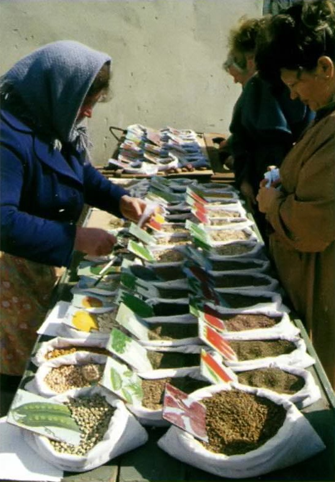

- В Западной Европе в средние века Молдавию часто именовали Росовлахия (Русская Валахия), а также Молдославия и Малая Валахия. А турки — Богдания по имени Богдана I, первого господаря (правителя) независимого Молдавского государства (в 1359-1365 гг.), предводителя успешного народного восстания против власти Венгрии
- Молдовой называется и историческая область на востоке Румынии, граничащая с Республикой Молдовой по реке Прут.
- Коллекция молдавских вин «Малые Милешты», включающая 1,5 миллиона бутылок, крупнейшая в Европе — по данным Книги рекордов Гиннесса. Ее погреба протянулись на 200 км, из которых только 50 км используются.
- Молдавская денежная единица лей получила свое название от румынской валюты лей, а та, в свою очередь, от голландской монеты, на которой был изображен лев. Эта монета находилась в обращении на Балканах и в Молдавии в XVII в.
МОЛДОВА
Страна в междуречье Днестра и Прута
от древней дакии до независимой республики молдова
Молдавия получила свое название от реки Молдова, что протекает по территории Румынии.
Сама же река была названа так от слова Mold на нижненемецком диалекте — «карьер»:
на берегах реки испокон веков велась карьерная добыча глины, песка, известняка.
- Нижний Траянов вал и Верхний Траянов вал (І-ll вв.);
- Крепость Сороки (XV в., Сороки);
- Винные подвалы Крикова и Малые Милешты;
- Природный феномен Сотня холмов.
- Официальное название: Республика Молдова.
- Столица: Кишинёв, 664 700 чел. (2011 г.).
- Крупнейшие города: Бэлць, Тирасполь, Бендеры, Рыбница, Кахул, Унгень.
- Денежная единица: молдавский лей.
- Религия: православные — 93,3%, прочие (иудеи, баптисты) - 6,7%.
- Крупнейшие аэропорты: Международный аэропорт Кишинёва.
Умеренный континентальный. Долгое и сухое лето, мягкая и короткая зима. Средняя температура: январь -4*С, июль +2*С. Среднегодовое количество осадков: 380-540 мм. Относительная влажность воздуха: 80%.
Вопросов о происхождении этого государства обычно не возникает: его название указывает на теснейшую историческую, этническую и лингвистическую связь с соседней Румынией. Самые древние следы человека на территории Молдавии относятся к раннему палеолиту (200-70 тыс. лет назад). С тех времен сохранились стоянки ашельской культуры (гроты Старые Дуруиторы). Здесь же в V-IV тысячелетиях до н. э. под влиянием нижнедунайской культуры Боян зарождается трипольская культура медно-каменного века. В бронзовом веке (ІІІ-II тысячелетия до н. э.) на территории Молдавии жили кочевые скотоводы. Многочисленные курганы свидетельствуют о том, что здесь расцвела культура Ноа и жили киммерийцы. Позже сюда приходят фракийцы (гето-даки), создавшие союзы племен на основе так называемой военной демократии. В І-IІІ вв. н. э. здешние земли пережили римское вторжение. Римляне оказали сильнейшее влияние на племена даков, создавших ранние формы государства. В результате процесса романизации гето-дакской культуры здесь зародился новый этнос — румыны (рум. români). В 271 г. под давлением варваров римляне покинули Дакию. Местное романизированное население Дакии в основном было истреблено, и только скотоводы-кочевники из предгорий спаслись в труднодоступных кодрах (лесах на одноименной возвышенности). V-XI вв. — эпоха проникновения славян на территорию междуречья Днестра и Прута. Остатки выжившего после набегов варваров населения было ассимилировано славянами. До настоящего времени в Молдавии обнаружены следы более 30 славянских поселений VI—VII вв. и около 200 поселений VIII—IX вв. Мирной жизни местного населения помешала новая беда: кочевники. Печенеги, половцы (куманы) своими нескончаемыми набегами снизили численность здешнего населения до катастрофического уровня. Ситуация стала еще хуже, когда в 1237- 1240 гг., разгромив русские княжества, монголо-татары хлынули на Днестровско-Карпатские земли. Вскоре почти все они вошли в состав Золотой Орды. В XII—XIV вв., в результате переселения в Днестровско-Карпатские земли, основным населением междуречья становятся волохи — потомки тех, кто уцелел еще во времена набегов варваров. Именно волохи стали самым многочисленным этносом Молдавского княжества (XIV—XVI вв.), сформировавшегося после упадка Золотой Орды. В 1456 г. княжество попадает в вассальную зависимость от Турции, а в 1774 г., по Кючук-Кайнарджийскому мирному договору, Молдавия становится протекторатом России. По условиям Бухарестского мира 1812 г. эти земли отошли к России и стали называться Бессарабией. В ходе Гражданской войны в России (1917-1922/1923 гг.) в 1918 г. была провозглашена независимость Демократической Республики Молдова, и вскоре она вошла в состав Румынии. В 1940 г. в результате подписания Договора о ненападении между Германией и Советским Союзом (Пакт Молотова — Риббентропа, 1939 г.) Румыния лишилась Бессарабии и Северной Буковины, они стали Молдавской ССР в составе СССР. 23 июня 1990 г. Молдавская ССР выходит из состава СССР и заявляет о своем суверенитете, а 27 августа 1991 г. — о государственной независимости Республики Молдова. Тогда же в стране усилились настроения, связанные с желанием интеграции Молдавии и Румынии. В юго-восточных регионах республики, населенных преимущественно русскими и украинцами, однако, нашлось очень мало тех, кто желал стать гражданином Румынии, что привело к созданию Приднестровской Молдавской Республики со столицей в Тирасполе, пока никем не признанной.
- Общая площадь: 33 851 км2. Население: 4 314 377 чел. (2011 г.).
- Плотность населения: 127,4 чел/км2.
- Самая высокая точка: г Баланешты, 430 м.
- Границы: общая протяженность — 1390 км; Румыния — 450 км, Украина — 940 км.
Промышленность: пищевая (производство вина, молочных продуктов; табачная), легкая (текстильная, кожевенная).Сельское хозяйство: виноградарство, садовод¬ство, овощеводство, зерно¬вые (пшеница, кукуруза), подсолнечник, табак, животноводство.
язык и земля молдавии
Республика Молдова считается одной из беднейших стран Европы, лишенной энергетических ресурсов. Но здесь прекрасный климат и плодородные земли. Экономика страны практически полностью зависит от выращивания фруктов и овощей, виноградарства и табаководства.
Богатство Молдавии, ее гордость и основной источник доходов — виноградарство и виноделие. Основная часть населения, те, кто не мигрировал в Россию или другие страны в поисках работы, пусть даже низкооплачиваемой, занимаются сельским хозяйством, в особенности — виноделием. Виноград здесь начали выращивать еще семь тысяч лет назад, на что указывают отпечатки листьев сорта «витус тувтоника», обнаруженные на севере Молдавии. Есть версия о том, что лучшие сорта винограда принесли сюда римляне. Этому нет строгих исторических доказательств, но вероятность такого события ученые считают высокой. На протяжении 300-летнего турецкого ига молдавское виноградарство находилось в глубоком упадке, поскольку виноделие было запрещено законом. Площадь под виноградниками составляет около 147 тыс. гектаров, или 2,3% от всех площадей в мире, отведенных под данную культуру. Большая часть вин производится на экспорт. В молдавских семьях нередко хранится собственный рецепт вина, передающийся из поколения в поколение. В стране работают 174 винзавода. К основным туристическим достопримечательностям Молдавии относят крупнейшие в Европе винные подвалы Крикова и Малые Милешты. Виноградарство — один из столпов экономики страны, практически утратившей промышленность, за исключением небольших предприятий перерабатывающей и легкой промышленности. Произошло это из-за политического конфликта с Приднестровьем, которое занимает узкую полосу на левом берегу Днестра. В 1990 г. Приднестровская Молдавская Республика в одностороннем порядке провозгласила свою независимость. Здесь живет большинство русского населения Молдавии и находится наиболее развитый промышленный район страны после Кишинёва. Отношения между Молдавией и Приднестровьем крайне напряженные — из-за ряда кровопролитных конфликтов с многочисленными жертвами с обеих сторон. В настоящее время безопасность в зоне конфликта обеспечивают совместные миротворческие силы России, Молдавии, Приднестровья и военные наблюдатели от Украины. Главной причиной разногласий Приднестровья и Молдавии остается стремление Молдавии к вхождению в состав Румынии, которую большинство молдаван считают своей исторической родиной. Культура Молдавии находится в тесной зависимости от романских корней начиная со II в. н. э., с периода римской колонизации Дакии. По этой причине большинство населения современной Молдавии, молдаване, — потомки переселенцев из-за Прута (начиная с XIV в.) и, как следствие, имеют общие с румынами обычаи и предпочтения в музыке, ковроткачестве и других видах народного творчества. Большинство современных ученых-языковедов даже не выделяют отдельный молдавский язык, а говорят лишь о молдавском диалекте древнего дако-румынского языка. По официальным данным переписи населения 2004 г. в Молдавии, 78,4% молдаван назвали своим родным языком молдавский. Но в школах и вузах современной Молдавии предмет «молдавский язык» в расписании отсутствует: изучается предмет «румынский язык». В стране много памятников старины, в основном связанных с традицией православия. Так, в деревне Цыпово под Кишинёвом располагается Успенский православный монастырь (X-XII вв.). Это сооружение, вырубленное в огромной цельной скале, самое крупное в Молдове и одно из самых больших в Европе.

Торговля семенами на одном из рынков Кишинёва. Всего в Молдавии на 2009 г. было зарегистрировано 1260 сортов и гибридов сельскохозяйственных культур и пород скота.